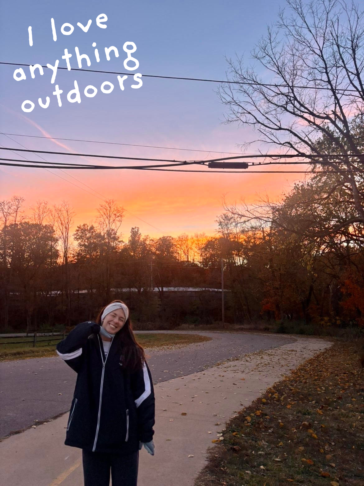
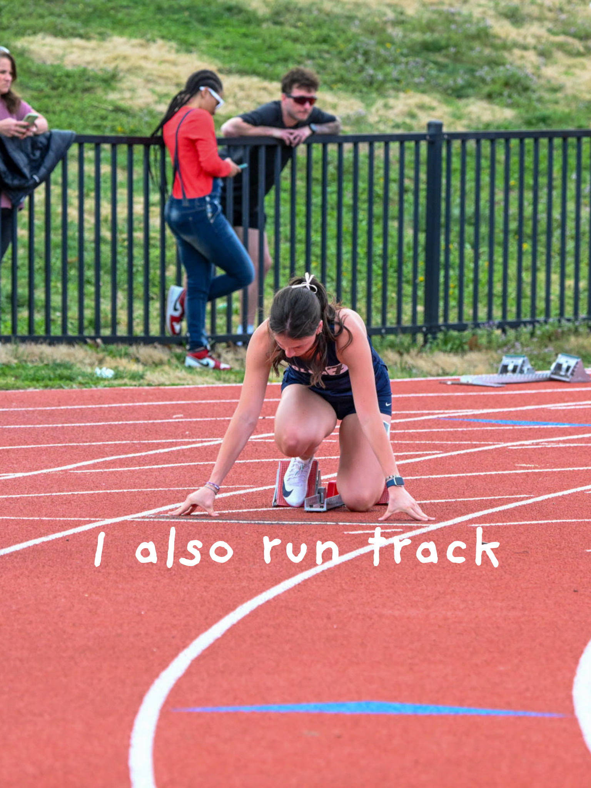
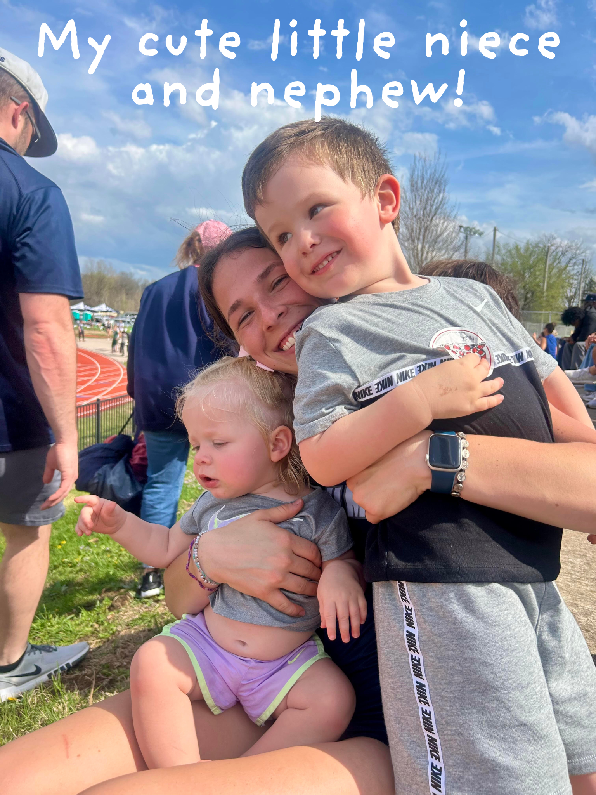

I am a junior here at CC pursuing a degree in Marketing with minors in Management and Graphic Design. I am also a member of the track and field team on campus, work for the school of business as a Social Media Marketing Intern, and am the Vice President of our college's American Marketing Assocation club.
In my free time I like to hangout with friends, exercise, spend time outdoors, read, watch TV, and do any kind of arts and crafts.
Feel free to look around or contact me if you have any questions, thanks!
-Caleigh